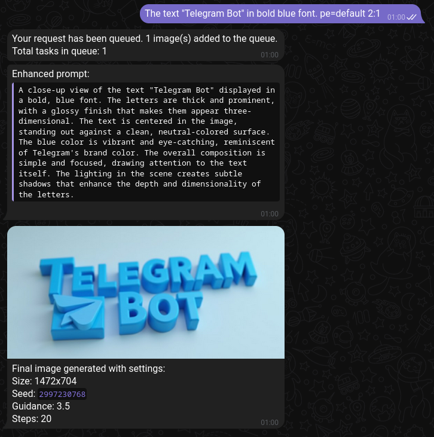
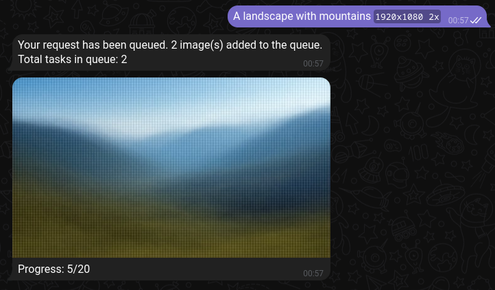
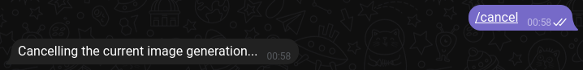
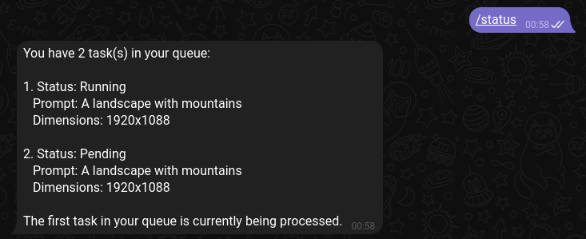

ComfyUI Telegram Bot
This project aims to create a user friendly way to generate images (through ComfyUI) over Telegram.
Quick Start
Showcase

Final generated image with prompt enhancement

Generation progress and preview

Cancelling generations

Generation queue status
How does it all work?
This projects acts as a Telegram bot that communicates with your ComfyUI server.
You as the user can send prompts with generation parameters as Telegram messages to the bot.
The bot sends you a message acknowledging your request and adds it to the queue.
You will receive messages as soon as the generation starts. The message will be updated with generation previews and then the final image.
Features
| TXT2IMG generation | Generate images using Flux.1 Dev from text. |
| Generation parameters | Change the parameters like steps and guidance (cfg). List of all parameters here. |
| Queueing | Queue you generations and let them execute sequentialy. |
| Prompt enhancement | Enhance your prompts using Claude 3.5 Sonnet. To change the text enhancement system prompts or add new ones look here |
| And much more... | |
Limitations
| No IMG2IMG generation | If you are interested in adding this, you can contribute here. |
| No model switching | The model is configured during the setup of the bot. |
| No LORA stacking | The bot works with modes which are configurable sets of parameters and can only include a single LORA. |